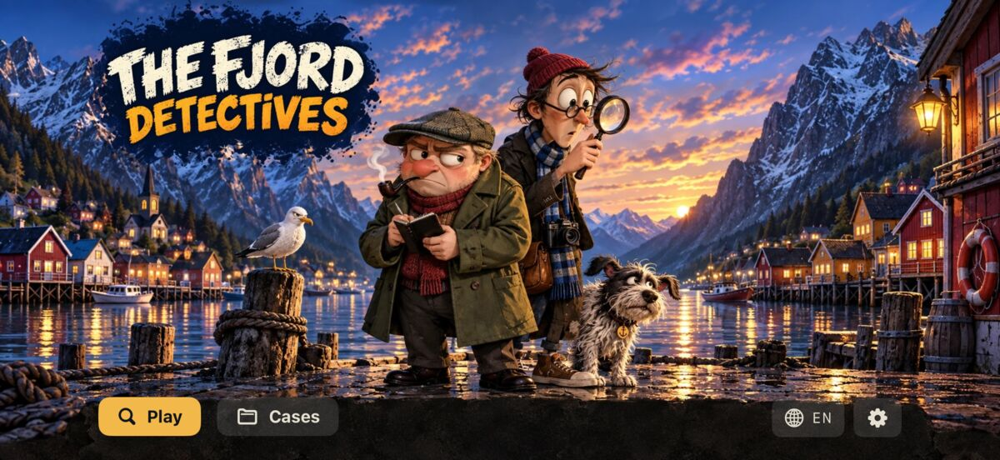
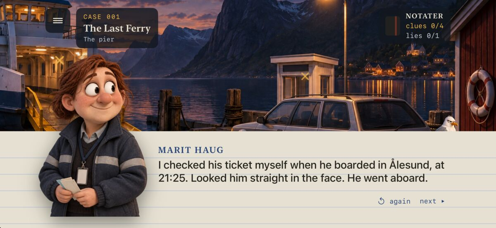
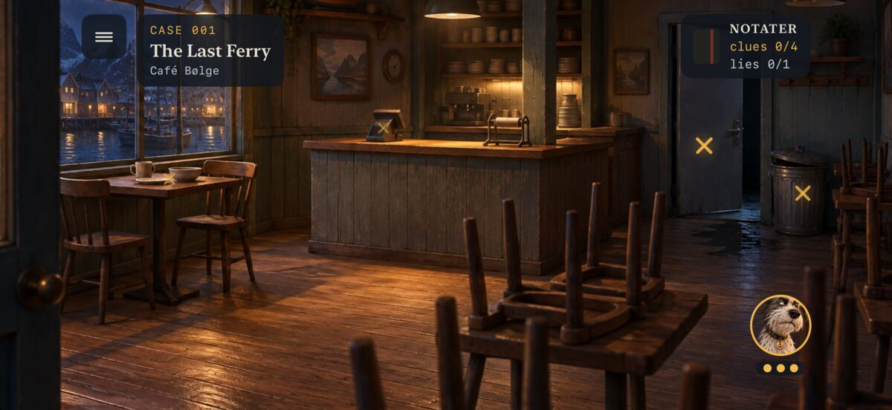
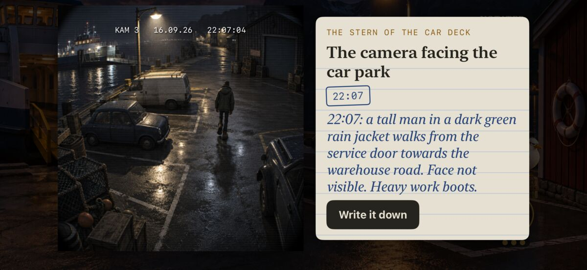
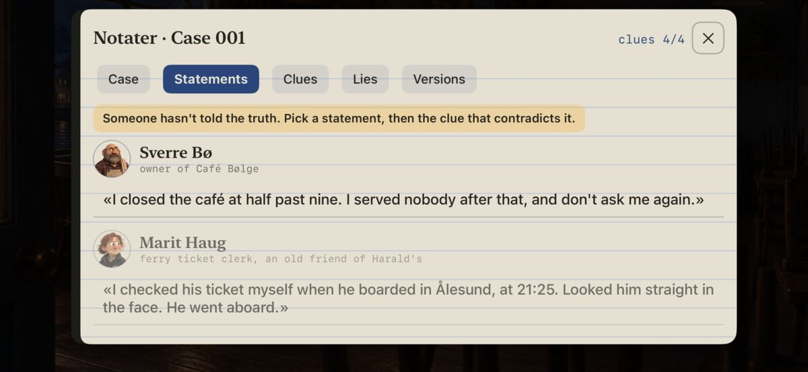
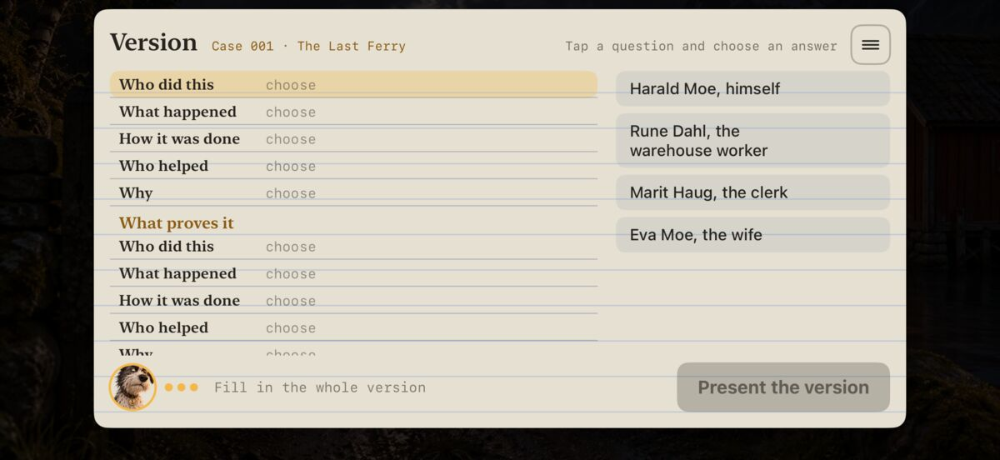

iPhone · Free to try · On the App Store
The Fjord Detectives
Nothing in Sundvik is quite what it seems.
A comic detective game set in Sundvik, a small, made-up Norwegian fjord town. You search the scenes, question the witnesses, catch them lying and put the solution together yourself — nobody does it for you.






The detectives
Bjørn is a grumpy detective with a notebook who has seen it all before. Leif is his young partner — tall, eager and curious, with a camera round his neck. And then there is Turbo, a scruffy dog who often finds the trail before either of them.
How it plays
- Search the scenes for clues — every location is drawn for the game
- Question witnesses; everything they say goes into the notebook
- Hold a statement up against a clue that contradicts it, and the lie falls apart
- Test theories about what happened, and finally prove who did it
- Stuck? Turbo helps — step by step, without giving the answer away at once
The cases
- Season one: Sundvik — ten cases in one connected story, from a missing chief accountant to a secret that has waited seventeen years. The finale is called Seventeen Years.
- Season two: Havnesund — a night photo shows a man walking out of the sea, yet the police say he drowned. Ten new cases about Axel Rønning, the marine surveyor who found something he was not meant to find. Separate app: The Fjord Detectives 2.
The cases are connected: small details from one turn up in the next. The first two cases of each season are free, and one purchase unlocks the rest of the season.
Fair puzzles
Every case should be solvable by thinking, not guessing. Before a case goes into the game, it is checked automatically: every lie must be exposable with a clue the player can actually find, the timeline must add up, and once all the evidence is in, only one solution may remain.
Status
Both seasons are on the App Store, fully voiced in English, Norwegian, German, Russian, French and Spanish. The game plays offline, with no account and no ads. I do the stories, game design, voices and programming; season three is in the works.
Technical: Swift, SwiftUI, cases described as data and automatic checking of every solution. Pictures and graphics are made with AI tools.
Download on the App Store The Fjord Detectives 2 Privacy policy